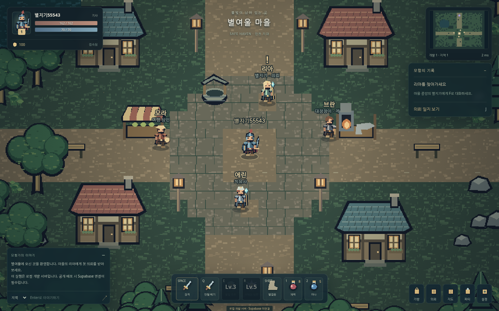
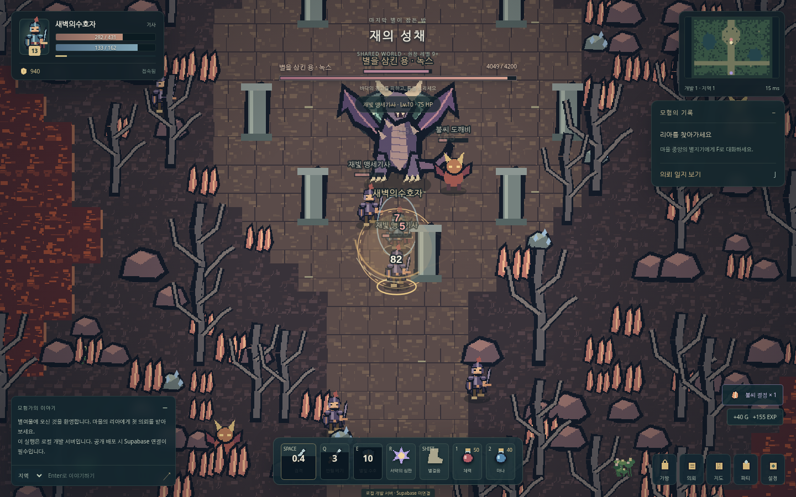

이 안내 파일은 게임 실행 파일이 아닙니다.
게임은 Node 서버에서 실행됩니다. 로컬은 START_LOCAL.bat 또는 명령어로, 온라인은 Render의 Web Service로 실행하세요. 무료 서비스용 소규모 초기 버전이며 대규모 상용 MMORPG를 뜻하지 않습니다.
01Supabase 준비
무료 프로젝트의 SQL Editor에서 supabase/setup.sql을 실행합니다. Anonymous Sign-Ins를 켜고 URL·공개키·서버 비밀키를 준비합니다.
02GitHub에 코드 올리기
package.json이 저장소 최상위에 오도록 폴더 내용물을 올립니다. 실제 .env, 개인 저장 폴더, 비밀키는 업로드하지 않습니다.
03Render Web Service
GitHub 저장소를 연결하고 Free 인스턴스를 선택합니다. 아래 빌드·시작 명령과 환경변수를 등록한 뒤 배포합니다.
먼저 내 컴퓨터에서 실행
Node.js 22 계열의 22.12 이상 버전이 필요합니다. Windows는 START_LOCAL.bat, macOS/Linux는 sh start-local.sh를 사용할 수 있습니다. 최초 설치에는 인터넷이 필요합니다.
npm ci
npm run build
# .env.example을 .env로 복사한 뒤:
npm start
# 브라우저에서 http://localhost:3000 접속
Render에 넣을 값
| 항목 | 값 |
|---|
| 종류 | Web Service / Node / Free — Static Site가 아닙니다. |
| Build Command | npm ci && npm run build |
| Start Command | npm start |
| Health Check | /health |
NODE_ENV=production
NODE_VERSION=22
ALLOW_DEV_GUEST=false
SUPABASE_URL=프로젝트 URL
SUPABASE_ANON_KEY=공개 publishable 또는 anon 키
SUPABASE_SERVICE_ROLE_KEY=서버 secret 또는 service_role 키
MAX_PLAYERS=24
SNAPSHOT_HZ=6
WS_COMPRESSION=true
배포 주소를 Supabase의 Site URL 및 Redirect URLs에 등록하세요. render.yaml도 포함되어 있습니다.
이메일 계정과 빠른 시작은 다릅니다.
빠른 시작은 같은 브라우저의 익명 계정으로 플레이합니다. 브라우저 기록 삭제·로그아웃 전에 이메일을 연결해야 복구할 수 있습니다. 일반 사용자의 이메일 인증·비밀번호 찾기·계정 연결에는 Supabase Custom SMTP 설정이 필요합니다. 자세한 순서는 README에 있습니다.
실제 실행 화면

로컬 브라우저에서 실행한 마을·NPC·HUD.
전투 확인용 테스트 캐릭터로 실행한 재의 성채.처음 플레이하는 순서
마을 중앙 리아에게 다가가 F로 대화하고 첫 의뢰를 받으세요. 북쪽 포탈에서 F를 눌러 숲으로 갑니다. WASD 이동, Space 기본 공격, Q/E/R 기술, Shift 회피, 1/2 물약, H 귀환입니다. 모바일은 화면 조이스틱과 버튼을 씁니다.
저장과 무료 서버의 한계
운영 저장은 Supabase에 보관합니다. Render 무료 서버는 일정 시간 트래픽이 없으면 휴면하며 첫 접속이 늦어질 수 있습니다. 사용량 한도도 있으므로 무제한 무료 운영을 보장하지 않습니다. 마지막 성공한 저장 이후의 진행은 강제 종료·저장 장애 시 되돌아갈 수 있습니다.
어디까지 검증했나요?
게임 규칙·네트워크·저장 자동 테스트, 두 브라우저의 파티/채팅/재접속, 모바일 세로/가로 UI, 로컬 24개 연결의 짧은 부하 검사를 수행했습니다. 실제 사용자의 Render/Supabase 프로젝트 배포, SMTP 발송, 장시간 운영·실물 모바일 성능은 검증하지 않았습니다. TEST_REPORT에 테스트 환경과 의존성 제한을 적었습니다.
무엇이 포함되고 빠졌나요?
3직업, 4지역, 3보스, 8개 메인 의뢰, 반복 의뢰, 최대 4인 파티, 제작·강화·상점·칭호가 들어 있습니다. PvP, 길드, 경매장, 결제, 수천 명 규모의 다중 서버는 포함하지 않았습니다.
안전하게 공개하려면?
작은 테스트 그룹으로 시작하세요. 불특정 다수에게 공개하기 전에 CAPTCHA, 운영 모더레이션, 백업과 장애 감시를 보완해야 합니다. 현재 CAPTCHA 위젯 연동은 없습니다. server secret 키를 클라이언트나 GitHub에 올리지 마세요.